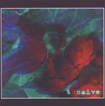

| Artist: | T |
| Title: | Naive |
| Label: | Galileo Records GR006 |
| Length(s): | 68 minutes |
| Year(s) of release: | 2002 |
| Month of review: | [04/2002] |
| 1) | She Said | 10.38 |
| 2) | A Night Out | 3.51 |
| 3) | Round Here | 4.28 |
| 4) | Do Not Come Back | 5.25 |
| 5) | Mother | 6.38 |
| 6) | A Day Like Any Other Day | 3.30 |
| 7) | She Is Dead | 7.25 |
| 8) | Tuesday Night Blues | 5.37 |
| 9) | Nothing More | 7.03 |
| 10) | The Dark | 3.29 |
| 11) | About Us | 9.47 |
A Night Out is a spooky affair with modern keyboards in one part and ethereal dreamy vocal parts in the other. You might be thinking of Radiohead and the like here. Again, quite different from the pure prog of Scythe. Round Here brings us back to the still music inspired it seems by No-Man, The Blue Nile and the desperate side of Radiohead. The vocals are sung low, and sound depressed. The music consists of low piano combined with synth strings. The vocal melody is again a very good one.
Do Not Come Back sounds very ethereal with cosmic layers of keyboards and high pitched vague guitar and keyboard echoes. A very full sound spectrum, but all rather vague and beautiful. Then the music turns for the orchestral with waves of floating melodies.
Mother is a vocal track opening with a memorable theme on piano, after which the guitar and drums break loose in a bombastic interlude. The piano returns with some "violin". The ending of the track with its noisy is quite spooky.
A Day Like Any Other Day opens with experimentation on the keyboards. Estranging sounds and effects give way to a lone repetitive piano. The harsh effects stay but move more into the background. A bit of playing around you might say. The vocals on this track are harrowing.
We are now past halfway, and we come to She Is Dead. The percussion consists of a fast ticking sound, the melodies are keyboard only. For the rest, the music is supported on the good vocal melodies. I realize now that T has quite some similarities to the somber progrelated music made by a Dutch band called I Spy, especially on their album, The Crystal Fire. The vocals are also similar although the mood in T's music is way more depressing. The only point of light is the piano dancing sometimes among the moody tones. Halfway, the vocals gain in power, in momentum and the goose bumps set in again.
Tuesday Night Blues continues the line of the album with a combination of piano, a slowly evolving guitar and acoustic guitar strumming in the back. Nothing More is another mesmerizing track with marching rhythms and a musical box. The style is similar to that on the first track.
The Dark is an instrumental like A Day Like Any Other Day. Again plenty of estranging sound and effects on this one comparable to the soundscapes of Fripp, but spookier. The final track is About Us. The music has that shimmering quality of a blinding bloodless sun. Time however for a bit of optimism when T sings his heart out in the chorus. The guitar sound owes a bit to Steve Rothery at his most relaxed and slowly the song winds to its end. So does the album.